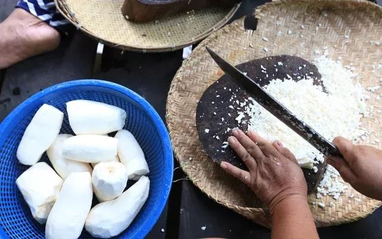
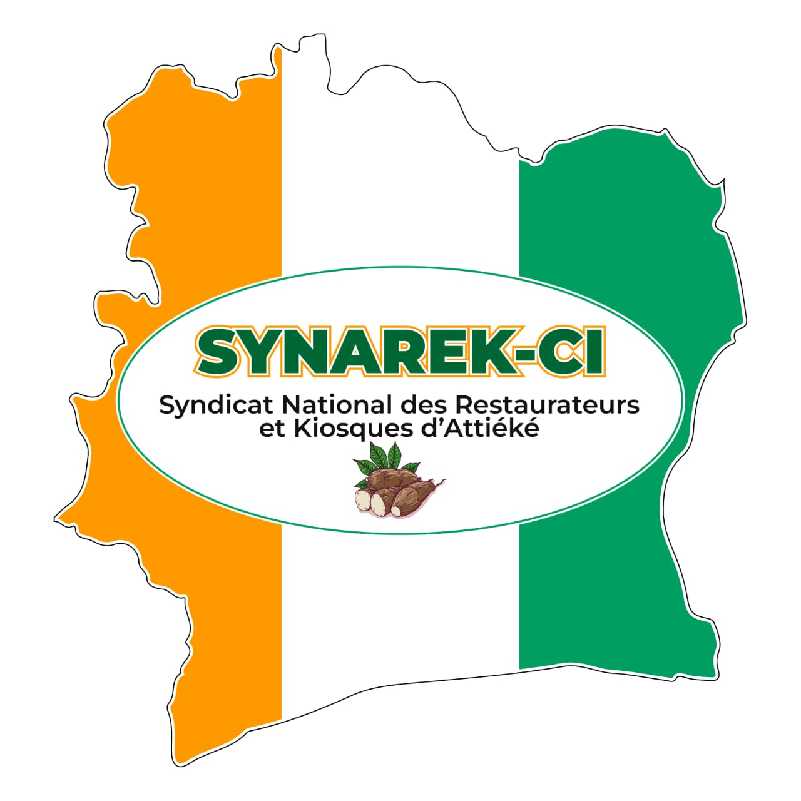

🌿 Qui sommes-nous
Présentation de l'ANAREKA-CI
L'Association Nationale des Restaurateurs et Kiosques d'Attiéké de Côte d'Ivoire (ANAREKA-CI) est une organisation professionnelle ivoirienne qui rassemble les restaurateurs, producteurs, vendeurs et gestionnaires de kiosques d'attiéké sur toute l'étendue du territoire national.
Créée dans le but de valoriser l'attiéké comme marque collective protégée et patrimoine culinaire emblématique de la Côte d'Ivoire, l'ANAREKA-CI œuvre pour l'organisation, la professionnalisation et le développement durable du secteur. Siège social à Cocody – Bonoumin — Récépissé N° 0408/PA/SG/D1.

🌿 Préparation artisanale de l'attiéké — râpage du manioc frais
✦ Notre Vision
« Faire de la filière attiéké un secteur moderne, structuré, compétitif et reconnu à l'échelle nationale et internationale. »
📜 Historique
Évolution de l'organisation

SYNAREK-CI
1997 – 2026
→
ANAREKA-CI
Depuis fév. 2026
28 juin
1996
Création de l'association
Fondée par Monsieur Oté Kouassi Georges, Président fondateur, pour regrouper les acteurs de la restauration d'attiéké en Côte d'Ivoire.
27 mai
1997
Reconnaissance syndicale — SYNAREK-CI
L'organisation est officiellement reconnue comme Syndicat National des Restaurateurs et Kiosques d'Attiéké de Côte d'Ivoire.
3 juil.
2025
Passation de charges officielle
Passation solennelle entre le Président fondateur Oté Kouassi Georges et son successeur, Monsieur Oté Jean Thierry.
18 fév.
2026
Naissance de l'ANAREKA-CI ✦
Dans une dynamique de modernisation, le SYNAREK-CI devient l'ANAREKA-CI avec de nouveaux membres fondateurs.
👤 Gouvernance
Équipe dirigeante
OJT
Président de l'Association
Monsieur Oté Jean Thierry
Membre fondateur de l'ANAREKA-CI — à la tête de l'association depuis la passation de charges de juillet 2025.
EL
Secrétaire Générale
Madame Eynoux Ezia Lydie Marcelle
Membre fondatrice — assure la coordination administrative et institutionnelle de l'association.
OKG
Président Fondateur Historique
Monsieur Oté Kouassi Georges
Fondateur de l'organisation en 1996 — a présidé le SYNAREK-CI pendant près de 30 ans avant la passation de juillet 2025.
🚀 Missions
Nos missions
1
Organiser et fédérer les restaurateurs et kiosques d'attiéké de Côte d'Ivoire
2
Promouvoir l'attiéké comme produit culturel et économique ivoirien
3
Former les acteurs aux bonnes pratiques d'hygiène, de gestion et de transformation alimentaire
4
Encourager l'entrepreneuriat féminin et l'autonomisation des jeunes
5
Défendre les intérêts des membres auprès des institutions publiques et privées
6
Mettre en place des projets d'assainissement, de recensement et de modernisation des points de vente
7
Développer des partenariats avec les ministères, ONG, collectivités et partenaires techniques et financiers
🗂️ Domaines d'intervention
Nos domaines d'action
🧼
Hygiène et salubrité
Campagnes d'assainissement, sensibilisation et formation pour améliorer les conditions sanitaires dans les espaces de fabrication et vente.
🎓
Formation et accompagnement
- Gestion des activités
- Formalisation des entreprises
- Techniques de conservation
- Accès aux financements
🎭
Promotion culturelle
Participation à des événements culturels, foires, salons et activités de promotion locale et internationale de l'attiéké ivoirien.
🎯 Objectifs
Nos objectifs stratégiques
✓
Structurer la filière attiéké en Côte d'Ivoire
✓
Améliorer les revenus des acteurs du secteur
✓
Créer des opportunités d'emplois pour les jeunes et les femmes
✓
Renforcer la qualité et l'image de l'attiéké ivoirien
✓
Contribuer au développement économique et social du pays
🤝 Partenariats
Nos partenaires
Partenaires actuels
OIPI
INHP
CAMPC
Luciole Média France
Préfecture d'Abidjan
Partenaires cibles
Ministères & institutions
Mairies & collectivités
ONG internationales
Structures de microfinance
Entreprises privées
Secteur agroalimentaire
📊 Données & Impact
Le secteur en chiffres
Évolution
Croissance de l'organisation depuis 1996
Composition
Types de membres
Activités
Domaines d'intervention
Priorités stratégiques
Axes d'action (importance /10)